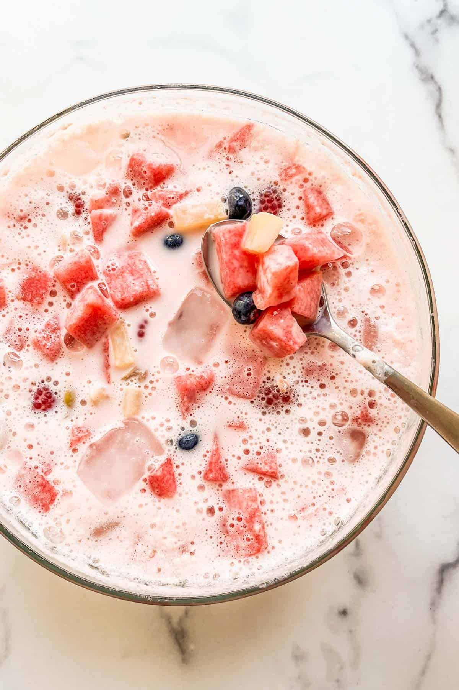

Hwaechae Recipe (Korean Fruit Bowl)

Description
Hwachae is a traditional Korean drink that is perfect for hot summer days.
Let’s learn more about this refreshing summer drink made with easily accessible ingredients.
Ingredients
- 1 cup ice cubes (I used mint leaf ice cubes.)
- 3 cups watermelon cubes
- ½ cup blueberries
- ½ cup raspberries
- 3 cups fruit of your choice
- 1 cup jelly
- ¼ cup popping boba
- 1½ cup Sprite
- 1¾ cup Pink Drink
- ¼ cup sweetened condensed milk
- ½ cup vanilla ice cream (Optional)
Steps
- Place all the prepared ingredients in a large bowl. Stir to combine.
- Enjoy!